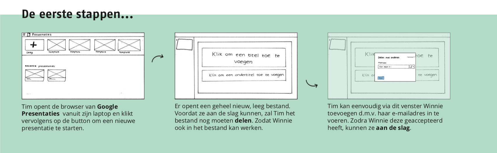
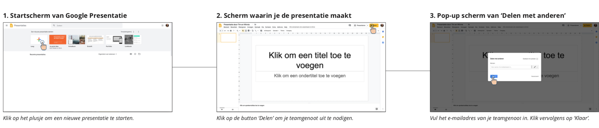

Design Patterns
Uit Project Web (Jaar 2) heb ik het vak Design Patterns voor een deel opnieuw moeten doen. Voor deze opdracht heb ik de werking van een bestaande Multi-Device Design onderzocht en aan de hand van een wireflow gepresenteerd. Allereerst is het belangrijk om een scenario te schrijven, zodat de context van het Multi-Device Design ervan duidelijk wordt. Vervolgens heb ik aangetoond welke strategie van het 3'C framework erin is verwerkt. Daarna ben ik wireframes gaan schetsen ter verduidelijking. Naar aanleiding van deze schetsen heb ik een wireflow gemaakt door middel van screenshots van Google Presentaties.
Samen een presentatie in Drive maken - Hoe werkt dat?
 Bekijk hier mijn Multi-Device wireflow